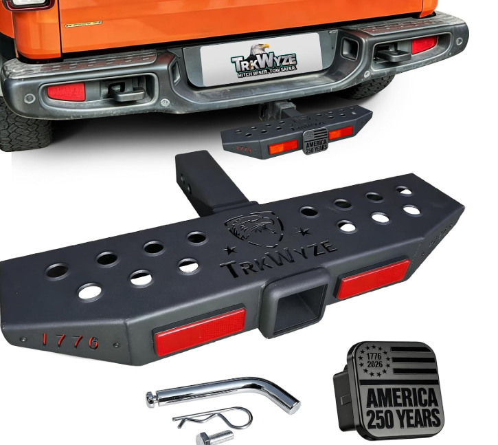

SAMPLE GMV
+12.0%前 100 产品月销售额
榜单样本月销量由 9,117 增至 10,050；两期仅 46 个 ASIN 重合，说明市场有明显新品流动。
2in 带拖车管项目已立项，目标 2027 年 4 月上架。首要任务是把安装、承重和配件完整性做扎实。

榜单样本月销量由 9,117 增至 10,050；两期仅 46 个 ASIN 重合，说明市场有明显新品流动。
差评第一来源，直接影响歪斜、异响与退货。
从日常洗车、户外装卸扩展使用场景。
有溢价，但必须建立在线束、防水与结构可靠性之上。
建议价格锚点：$99.99。落在主流竞争带上沿，用三合一功能与更完整的防晃、锁止和涂层方案支撑溢价，不参与 $30 左右的纯低价竞争。
附件中的榜单快照为 2026.01.19 与 2026.07.08，暂未发现 2025.07 的前 100 销售数据。
2025.07 前 100 月销售额、月销量、价格中位数、平均评分及 ASIN 清单，补齐后才能计算同比。
2026.01 → 2026.07：销售额 +12.0%、销量 +10.2%、价格中位数 -4.4%，两期 ASIN 重合 46%。
分析边界：目前只能判断市场在增长、价格竞争加剧且新品流动明显，不能把 2026.07 与 2025.07 的同比增幅写成确定值。补入 2025.07 快照后，再更新图表和同比结论。

以 2in 接收器为入口，兼顾车尾上下车、轻度防撞与拖车盖情绪价值。首发版本控制复杂度，差异点集中在结构、安装和交付体验。
以 2in 带拖车管首发项目为基础，按稳定经营口径评估；后续 SKU 以共性结构复用和功能扩展为主。
厚壁接收臂 + 底部加强，目标静载 600 lb / 牵引 7,500 lb，待测试确认。
销孔同轴、水平偏差受控，配防晃套件与完整零件袋。
拖车盖保留美国元素，作为视觉记忆点，不替代基础安全价值。
所有外观和扩展功能都必须建立在“装得正、踩得稳”的首发质量基线上。
预计 27 年总 GMV：$390,508（不含 P3 待验证方案）
测算口径：Amazon 售价为 2026.08.26 页面当前公开售价；27 年 GMV = 项目规划售价（未单独标注时取 Amazon 参考价）× 27 年规划销量。Amazon 仅公开部分商品的月购买量，未显示的项目标为“待验证”，不沿用旧估算。
这不是依赖短期爆款的高波动赛道。美国 SUV/轻型卡车保有量、拖挂 hitch 装车基盘和用户对便利上下车的长期需求，为 2027-2030 提供温和增长底盘；产品策略应从首发款逐步复用结构能力、扩展功能和车型覆盖。
美国卡车/SUV 新车占比高，且已有大规模 hitch 装车基盘。2in 接收器占主流，通用脚踏的适配和复购入口更清晰。
对应策略：先做 2in 通用款65 岁以上人口占比从 2010 年的 13% 升至近年来 16.8% 以上，预计 2030 年达到 21%。更省力、更稳、更容易上下车的产品价值会持续存在。
对应策略：可调高度 / 防滑 / 防晃Hitch Step 同时覆盖上下车、保险杠防护、拖车、车顶取物和户外场景。多功能组合能支撑主流价带上沿的溢价。
对应策略：三合一 → LED / 防盗扩展已核对 PPT 中的 Amazon 参考链接：双层防滑 / 防盗、D 形环、LED 刹车灯。价格和卖点为页面读取时的公开信息，仅作新品方向参考。
SUV 和轻型卡车占新车市场一半以上，更多车主具备 hitch 或后装需求，关键词覆盖人群自然变宽。
拖挂、露营、自驾、洗车和车顶装卸在春夏更活跃。2026 年冲到指数 100，更像季节性需求与新品/促销活动叠加后的峰值。
用户搜索的不只是“踏板”，还包括保险杠保护、拖车球、自行车架、LED 和防盗等组合功能，产品内容和广告扩大了关键词入口。
判断边界：Google Trends 是相对搜索指数，峰值 100 代表观察区间内的最高热度，不等于销量或市场规模。网页将其作为需求方向信号，与榜单销售额和真实评论交叉使用。